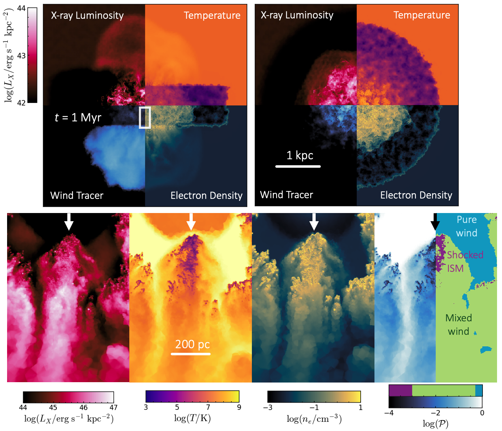
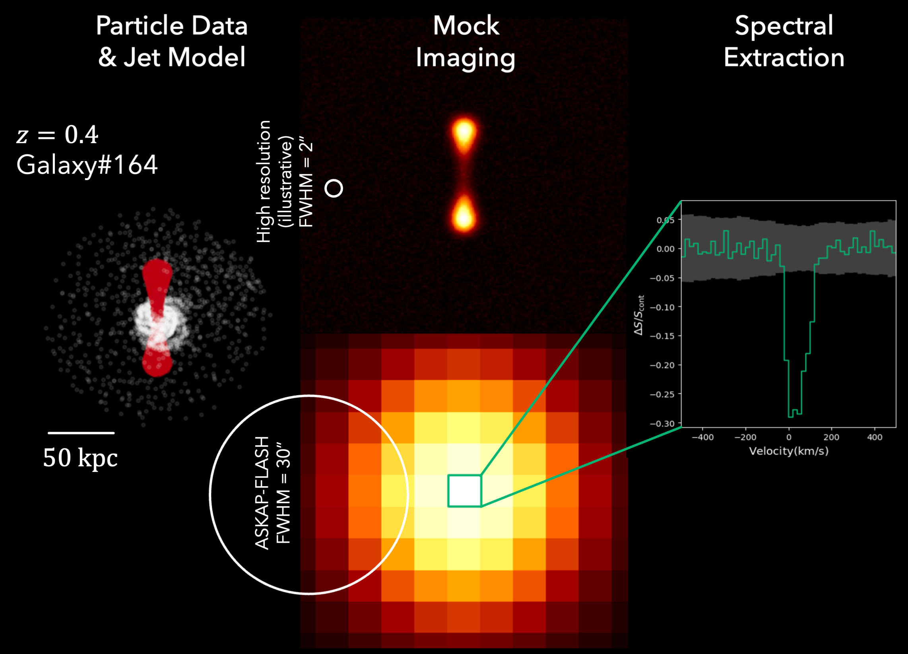
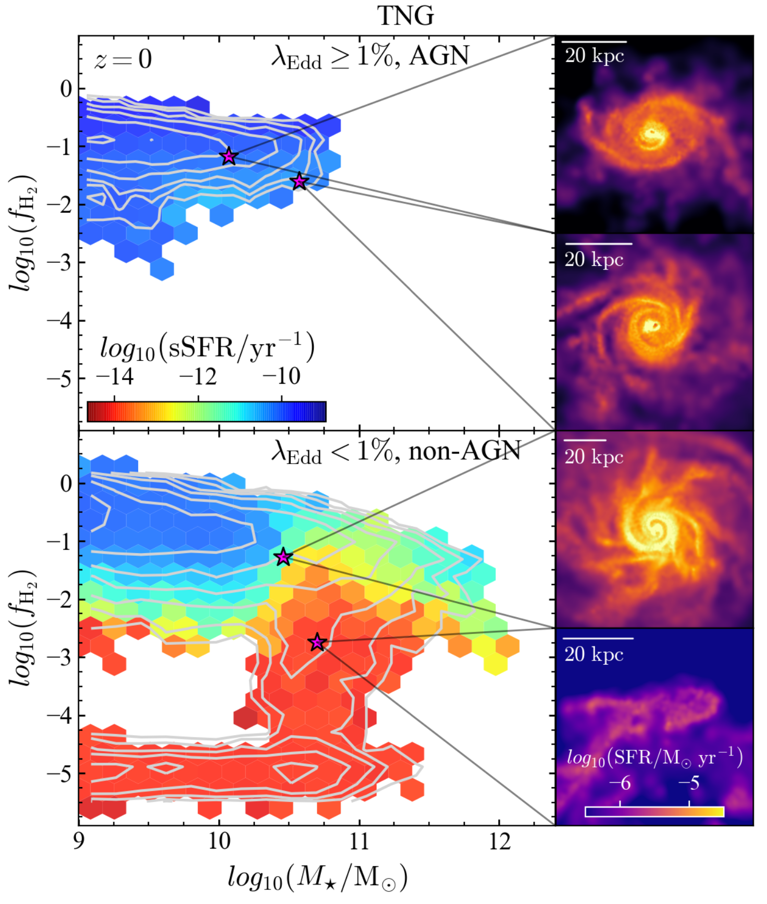

How do outflows from Active Galactic Nuclei
impact the evolution of galaxies?
Most massive galaxies harbour a supermassive black hole at their centre. For much of their lives these black holes lie dormant, but if fed with enough gas, they can form active galactic nuclei (AGN), releasing a huge amount of energy. This energy can drive powerful outflows back into the galaxy, both in the form of winds and jets. My research asks how these outflows interact with the surrounding gas, and whether they can suppress star formation and quench the galaxy's growth.
Wind-ISM simulations
A movie from the ACDC simulations, showing an AGN wind launched in a disc with a clumpy ISM (Ward+24)
Understanding how AGN-driven winds couple to the ISM in galaxies is key to revealing the impact of outflows on galaxy evolution. However, resolving the small-scale interactions between AGN winds and the interstellar medium (ISM) remains computationally challenging. To study these processes directly, I created the ACDC (AGN in Clumpy DisCs) simulation suite, which combines a manually controlled clumpy ISM structure with an AGN wind model based on Costa et al. (2020), using the AREPO code (Springel et al. 2010). These simulations revealed how AGN winds launch multiphase outflows whose properties differ significantly from analytic models and simulations with underresolved ISM structure (Ward et al. 2024).
A longstanding problem in the field is how cold clouds survive being accelerated by an AGN wind without being destroyed. Using the ACDC simulations, we find that clouds can survive on timescales exceeding 5 Myr through efficient mixing and radiative cooling at the wind-cloud interface. In Ward et al. (2026), we investigated the X-ray emission produced by this mixing layer, showing it to be a potentially important contributor to the soft, extended X-ray excess observed in nearby quasars.
This work has since been extended in two directions: Ivan Almeida (MPIA) developed an enhanced refinement scheme for the cold clouds, showing that higher-luminosity AGN drive denser outflowing clouds with important implications for how outflow properties are inferred observationally (Almeida et al. 2026). PhD student Houda Haidar (Newcastle University) is incorporating a dust sputtering destruction model to study dusty outflows (Haidar et al., in prep.).

X-ray predictions from the ACDC simulations show that the emission is dominated by wind-ISM mixing (Ward+26)
Mock radio observations

An overview of the SANGRiA pipeline, showing the SIMBA gas particles and injected jet model, mock ASKAP observations and 21cm spectral line analysis (Kerrison+26, sub. ApJ).

Radio observations offer a unique window into AGN feedback — from high-energy non-thermal emission to 21cm spectra of neutral hydrogen. Working with CCA predoctoral researcher Emily Kerrison (University of Sydney), I developed SANGRiA (Simulating Absorption of Neutral Gas for Radio Astronomy), a forward-modelling pipeline for 21cm HI absorption. SANGRiA takes galaxies from the SIMBA cosmological simulation, adds jet models, and uses these as backlights for HI absorption radiative transfer. In Kerrison et al. (2026, submitted to ApJ), we apply this to the ASKAP-FLASH survey to investigate the overrepresentation of compact radio sources in their HI-detected sample. A forthcoming companion paper (Ward, Kerrison & Tonnesen) will present the full SANGRiA framework and demonstrate its applicability across current and future radio telescopes including MeerKAT, the SKA, and the DSA.
Cosmological simulations

In Ward+22 we showed that AGN preferentially live in gas-rich, star-forming galaxies in cosmological simulations, despite them implementing strong feedback models.
Cosmological simulations such as IllustrisTNG, EAGLE, and SIMBA require AGN feedback to reproduce observed galaxy properties, including stellar mass functions. However, observational studies consistently find AGN preferentially in gas-rich, star-forming galaxies, leading some to question whether AGN feedback is truly effective. In Ward et al. (2022), we analysed these simulations using the same techniques applied to observational samples, finding that simulations also predict AGN to inhabit gas-rich, star-forming hosts despite employing effective feedback models. This demonstrates that the absence of population-level evidence for feedback cannot be used to rule out AGN-driven quenching. This simulation analysis was subsequently incorporated into observational studies of AGN host galaxies by Bertola et al. (2024) and Frias Castillo et al. (2024).
Contact
Center for Computational Astrophysics
Flatiron Institute
162 Fifth Avenue
New York, NY 10010
Email: sward@flatironinstitute.org
Website: samuelrward.github.io
Publications: ADS listing
ORCiD: 0000-0001-5345-0900